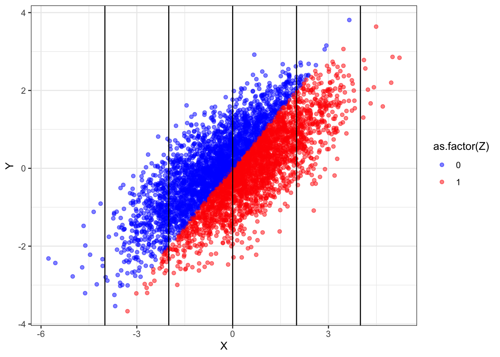

# Parameters
b <- 1
N <- 40
# Declaration
model <- declare_model(N = N, U_1 = rnorm(N), U_2 = rnorm(N),
X = U_1 + U_2, Z = 1 * (U_2 > 0),
potential_outcomes(Y ~ b * Z + U_1))
inquiry <- declare_inquiry(ate = mean(Y_Z_1 - Y_Z_0))
measurement <- declare_measurement(Y = reveal_outcomes(Y ~ Z))
answer_1 <- declare_estimator(Y ~ Z, inquiry = "ate",
model = lm_robust, label = "No control")
answer_2 <- declare_estimator(Y ~ Z + X, inquiry = "ate",
model = lm_robust, label = "With control")
design <- model + inquiry + measurement + answer_1 + answer_2Consider an observational study looking at the effect of a non-randomly assigned treatment, \(Z\), on an outcome \(Y\). Say you have a pretreatment covariate, \(X\), that is correlated with both \(Z\) and \(Y\). Should you control for \(X\) when you try to assess the effect of \(Z\) on \(Y\)?
This has been a question of some disagreement, with Rosenbaum (2002), for instance, arguing that “there is little to no reason to avoid adjustment for a true covariate, a variable describing subjects before treatment,” and Greenland, Pearl, and Robins (1999) and others arguing that you cannot answer this question without a causal model of how \(Z\) relates to \(X\) and \(Y\). See also this discussion hosted by Andy Gelman. Controlling for pretreatment covariates in a randomized experiment usually can’t hurt and usually increases precision – but what about in an observational study in which pretreatment covariates might be correlated with both the (nonrandomly assigned) treatment and the outcome?
Design declaration and diagnosis makes it relatively simple to examine the kinds of cases that worry Greenland et al and see where risks of bias might come from.
Let’s declare a design with a model of the form:
- \(X = f_1(U_1, U_2)\)
- \(Z = f_2(U_2)\)
- \(Y = f_3(Z, U_1)\)
In this world, \(X\) is a function of background unobserved variables \(U_1\) and \(U_2\), a treatment variable \(Z\) is a function of \(U_2\), and an outcome \(Y\) is a function of \(Z\) and \(U_1\). We can assume that that \(X\) is determined prior to \(Z\). We will use two answer strategies, both regression based approaches, one with a control and one without.1 Here is the full declaration:
Here is the diagnosis:
diagnosis <- diagnose_design(design)| Design | Inquiry | Estimator | Bias | RMSE | Power | Coverage | Mean Estimate | SD Estimate | Mean Se | Type S Rate | Mean Estimand |
|---|---|---|---|---|---|---|---|---|---|---|---|
| design | ate | No control | -0.00 | 0.31 | 0.86 | 0.95 | 1.00 | 0.31 | 0.32 | 0.00 | 1.00 |
| design | ate | With control | -1.17 | 1.18 | 0.14 | 0.00 | -0.17 | 0.17 | 0.17 | 0.98 | 1.00 |
We see that the estimator without controls is unbiased while the one with controls is very biased. Clearly, introducing a control was a mistake, even though the control was pretreatment.
The reason why the estimator without controls is unbiased is simple enough: \(U_2\) is correlated with \(X\) and \(Y\) (via \(Z\)), however it is not correlated with \(Y\) given \(Z\). Indeed, in the model given, it is as if \(Z\) is randomly assigned by \(U_2\).
The reason why the estimator with controls behaves so poorly is not as obvious. Conditioning on \(X\) introduces a correlation between \(Y\) and \(Z\) that is not due to the effect of \(Z\) on \(Y\). In the language used by researchers working with graphical causal models, \(X\) is a “collider” for \(U_1\) and \(U_2\). Conditioning on \(X\) creates a “backdoor path” between \(Z\) and \(Y\), inducing a correlation between them that is not a result of the causal effect.
For a little more intuition, we can modify the design to look at a world in which \(Z\) does not affect \(Y\):
null_design <- redesign(design, N = 5000, b = 0)Diagnosis yields:
| estimator | bias |
|---|---|
| No control | 0.00 |
| With control | -1.17 |
We still observe bias. To see where this bias is coming from, let us draw data from this design and plot the relationship between \(Z\) and \(Y\). Doing so lets us see how \(Z\) and \(Y\) relate to to each other for different values of \(X\).
draw_data(null_design) %>%
ggplot(aes(X, Y, color = as.factor(Z))) +
geom_point(alpha = 0.5) +
geom_vline(xintercept = seq(-4, 4, 2)) +
scale_color_manual(values = c("blue", "red"))
What we see here is that, overall, the red points are no higher or lower than the blue points — indicating no treatment effect. Yet within any vertical band (i.e., keeping \(X\) fixed), the blue dots are generally higher than the red dots. Conditioning induces a non-causal correlation.
The implication is quite a deep one: models of data generating processes are sometimes required in order to justify the choice of statistical models.
References
Greenland, Sander, Judea Pearl, and James M Robins. 1999. “Causal Diagrams for Epidemiologic Research.” Epidemiology, 37–48.
Rosenbaum, Paul R. 2002. Observational Studies. Springer.
Footnotes
In contrast to the regression approach examined here, Bayesian approaches that model the causal structure could use information on \(X\) without introducing the kinds of problems presented here.↩︎